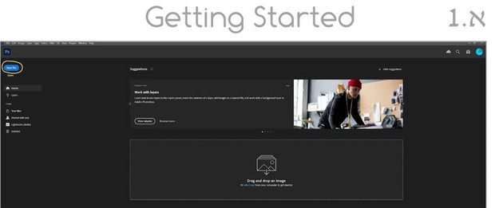
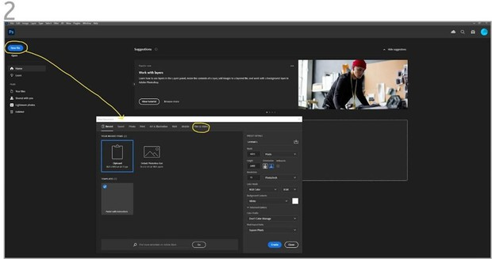
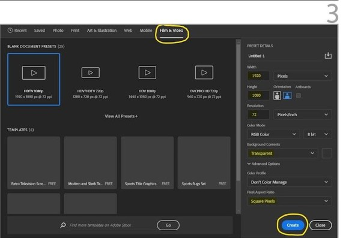
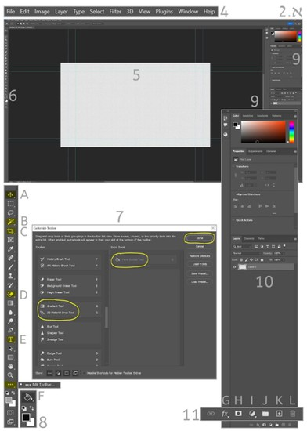
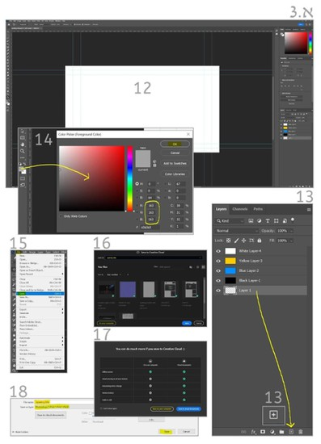

הצגת הנושא
בפרק זה נלמד איך לפתוח פרויקט חדש בפוטושופ, נכיר את מערך הממשק, כלי עבודה ראשונים ואת עיקרון העבודה בשכבות.
חשיבות הנושא
פוטושופ נחשבת לתוכנה המובילה בעולם לעיצוב גרפי ומהווה פלטפורמת יצירה מגוונת ומאתגרת לחובבים ומקצוענים בתחום. התוכנה מאפשרת מגוון אינסופי של יישומי יצירה שמגבלותיהם היחידות בדרך כלל אינן בממשק התוכנה אלא באלה שבחרו ליצור בסביבתה.
כדי להבטיח תהליכי יצירה מוצלחים יש להקפיד על כניסה נכונה למרחב התוכנה, הגדרת פרויקט, שמירה וניהול נכון של תהליך היצירה.
תת-הנושאים ביחידה זו:
- א.1 פתיחת פרויקט חדש.
- א.2 הכרת ממשק התוכנה וכלי עבודה ראשונים.
- א.3 עקרון השכבות ושמירת פרויקט.
מטרות אופרטיביות
התלמיד יכיר את מערכי העבודה הראשונים בפוטושופ וידע להשתמש בהם בתהליכי עיצוב גרפי כחלק בלתי נפרד מהפקות קולנוע מקוריות.
א.1 פתיחת פרויקט חדש
- פתחו את תוכנת פוטושופ > New file.
- בחלון New Document בחרו הגדרת פרויקט חדש בלשונית Film&Video.
- בחלון הפרויקטים בחרו HDTV 1080p ואשרו create.
ממשק התוכנה נפתח לתחילת עבודה.
א.2 הכרת ממשק התוכנה וכלי עבודה ראשונים
- שורת הפקודות העליונה בממשק (פירוט רלוונטי בלבד בהמשך).
- בימת היצירה לפי מה שהגדרתם בחלון הפרויקט (1080p).
- סרגל כלי היצירה המרכזיים בתוכנה (על חלקם הרלוונטי נעבור).

- A - כלי ההזזה (Move)
- B - מטה הקסם (Magic Wand)
- C - כלי החיתוך (Crop)
- D - כלי מחק הקסם (Magic Eraser)
- E - כלי הטקסט (Text)
- F - דלי הצבע (Paint Bucket)
- חלון סרגל כלים בהתאמה אישית – Customize Toolbar.
בחלון זה תקבלו את פריסת כלי היצירה בתוכנה ותוכלו לבצע בחירה סלקטיבית של כלים המתאימים לעבודת היצירה שלכם. כדי לפתוח את החלון, לחצו על אייקון 3 הנקודות בסרגל כלי היצירה (השמאלי), ותיפתח לכם האפשרות Edit Toolbar.
לחיצה תפתח את חלון ההתאמה האישי. בצד השמאלי של החלון תוכלו לגלול את ספריית כלי היצירה. לאחר שבחרתם את כלי היצירה הנדרש, יופיע הכלי בחלון Extra Tools. אשרו את הבחירה בלחיצה על פקודת Done, והכלי יתווסף לסרגל.
- בחירת צבע המילוי לדלי הצבע על פי העדפה אישית.
בשני הריבועים החופפים חלקית עליכם ללחוץ על העליון כדי לבחור את הצבע הרצוי. פירוט בהמשך.
- מערך חלונות העבודה הימניים בממשק התוכנה.
בחלק הימני העליון, חלון בחירת הצבעים (Color).
- חלון השכבות Layer.
- סרגל הכלים התחתון במערך חלונות העבודה הימניים.
G - פתיחת חלון סגנון השכבה Layer Style.
K - הוספת שכבת עבודה חדשה.
L - כלי הסילוק (אליו תגררו ותשליכו שכבה שבחרתם לסלק לפח).



א.3 עקרון השכבות ושמירת פרויקט
בימת היצירה שפתחתם כפרויקט עיצוב חדש, היא בעצם שכבה שקופה שתופיע בשם Layer 1 (ניתן לשנות שם לכל שכבה שבחרתם).
עקרון העבודה בשכבות – הערות חשובות:
- בתוכנת פוטושופ לכל אחד ממרכיבי היצירה השונים תהיה שכבה שבה יופיע מרכיב יצירתי בתהליך.
- כמספר מרכיבי היצירה כך מספר השכבות שייערמו זו על זו.
- עקרון העבודה בשכבות מבטיח שליטה מלאה של היוצר על היצירה.
- למשל, אם מרכיב כלשהו ביצירה יוצר בעיה למעצב הגרפי הוא יוכל להשליך את השכבה לפח בלי לפגוע בשאר מרכיביה המוצלחים של היצירה.
- לכן, בכל תהליך יצירה המעצב הגרפי צריך לפתוח שכבה חדשה לפני שיוסיף מרכיב חדש בתהליך. לדוגמה: אם לכרזת קולנוע יש רקע, תמונת שחקנים וארבעה מרכיבי טקסט, בחלון השכבות שיפתח המעצב יהיו לפחות שש שכבות עבודה.
- כברירת מחדל, כל שכבה חדשה תהיה באטימות של 100% (Opacity).
- ככל שתורידו את דרגת האטימות המרבית כך תיראה יותר השכבה שמתחתיה.
תרגיל מעשי
- פתחו פרויקט עבודה חדש.
- הגדירו את הפרויקט לרזולוציה של 1080p HDTV.
- ודאו שהשכבה הראשונה שיצרתם היא שכבה שקופה ולא שכבת Background אטומה (שמופיעה כ-Default בצבע לבן).
- לשכבה הראשונה שיצרתם (בחלון השכבות) יש לקרוא Frame 1.
- פתחו עוד שלוש שכבות חדשות לפי השמות Layer 1, Layer 2, Layer 3.
- בשכבות הראשונה, השנייה והשלישית מלאו צבע לפי הנתונים הבאים:
- R-49 G-65 B-109 – שכבת צבע 1.
- R-241 G-200 B-37 – שכבת צבע 2.
- R-27 G-154 B-87 – שכבת צבע 3.
- לאחר שביצעתם את השלבים 1-6, עליכם לשמור את הפרויקט החדש.
- שמרו כקובץ PSD בתיקיית תרגילים שפתחתם במיוחד ליחידת לימוד זאת.

שאלה למחשבה: איזה יתרון מקנה לכם היכולת להגדיר צבעים לפי ערכים מספריים?
זמן משוער לביצוע התרגיל: 2 שעות.